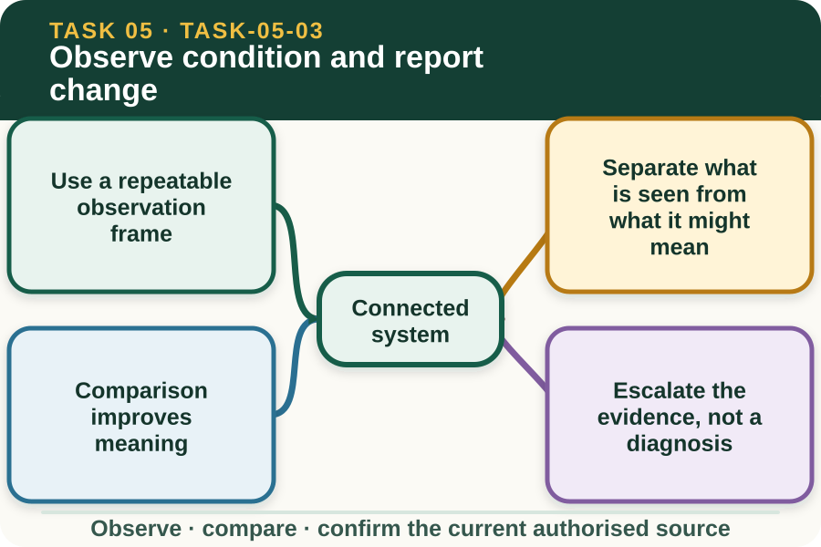

Learning purpose
Record objective observations and separate what was seen from a diagnosis or treatment decision.
Task 5 · Lesson 3 of 4
Record objective observations and separate what was seen from a diagnosis or treatment decision.
Learning purpose
Record objective observations and separate what was seen from a diagnosis or treatment decision.
Success criteria
Learning boundary
Supplementary learning and formative practice only. Current RTO assessment, local procedures and authorised supervision control real work.

A repeatable frame helps an observer notice change without wandering between unrelated impressions. It can organise appearance, behaviour, movement, group position, intake-related observations and environmental conditions at a confirmed time and place.
The workplace determines which fields and frequency apply. The website supports the thinking pattern only and does not set a species baseline, clinical threshold or schedule for real animals.
Observation describes direct evidence such as uneven movement, repeated separation from the group or a visible change in coat condition. Diagnosis names a condition or cause and requires authorised expertise and evidence.
A learner can report that an animal made fewer visits to an observed area during the period. The learner should not claim that pain, infection or nutrition caused that pattern unless an authorised source has established it.
A change becomes clearer when it is compared with an earlier record, the rest of the group or a supervisor-confirmed baseline. The comparison should use the same field and a reasonably similar context.
Records that use different times, locations or observation methods may not be directly comparable. Note those limitations rather than forcing the entries into a simple improvement-or-decline conclusion.
Prompt reporting gives the authorised person an opportunity to review animal welfare and decide what happens next. The report should name the animal or group, specific change, duration or repetition, context and any immediate safety concern.
A learner does not prescribe treatment, isolation or handling. If an emergency or serious concern is suspected, the current workplace plan and direct supervisor or veterinary direction control the response.
Fictional worked example
Observed evidence: At fictional Ironbark Farm, Noah compares two approved observation sheets and sees that animal B17 was recorded near the group throughout the morning check but remained apart during three intervals in the afternoon check. The afternoon temperature and observation location also differ. Decision and reason: Noah cannot diagnose the cause or conclude that the condition worsened because the contexts are not identical. Safe action: He reports the identifier, repeated separation and contextual differences. Result: The supervisor decides the follow-up. Next check or record: Noah enters the facts and leaves the diagnosis and intervention fields to authorised staff.
Traceable notes use an unambiguous animal or group identifier, date, time, observer, location and observable description. Where a workplace form includes a status field, only authorised terms and options should be used.
Avoid rewriting memory later as if it were contemporaneous evidence. If an entry is delayed or uncertain, follow the current correction process and make the uncertainty visible rather than backfilling a confident story.
A report is not complete merely because it was sent. Confirm that the designated person received and understood the observation, then record any direction that falls within the learner's authorised role.
This module does not authorise an intervention or prove assessment performance. It prepares learners to communicate evidence clearly before supervised work and current RTO assessment occur in their approved settings.
Formative practice
Each option explains the consequence. These answers save only on this device.
Written application
Apply and keep a learning record
Sort twelve teacher-provided fictional statements into observation, context, interpretation and authorised decision. Rewrite any diagnosis or motive claim as a reportable observation without adding new facts.
Learning record: A supplementary classification table and revised objective statements suitable for teacher feedback.
Lesson responses and the activity are formative learning only. Formal sufficiency and competence remain with the current RTO process.
Source basis: AHCLSK223 Release 1 livestock-check and reporting requirements, AHCLSK224 Release 1 behaviour monitoring, and the authorised livestock focus-area emphasis on normal, abnormal and changed behaviour. Current workplace procedures and authorised animal-health expertise control diagnosis and response.